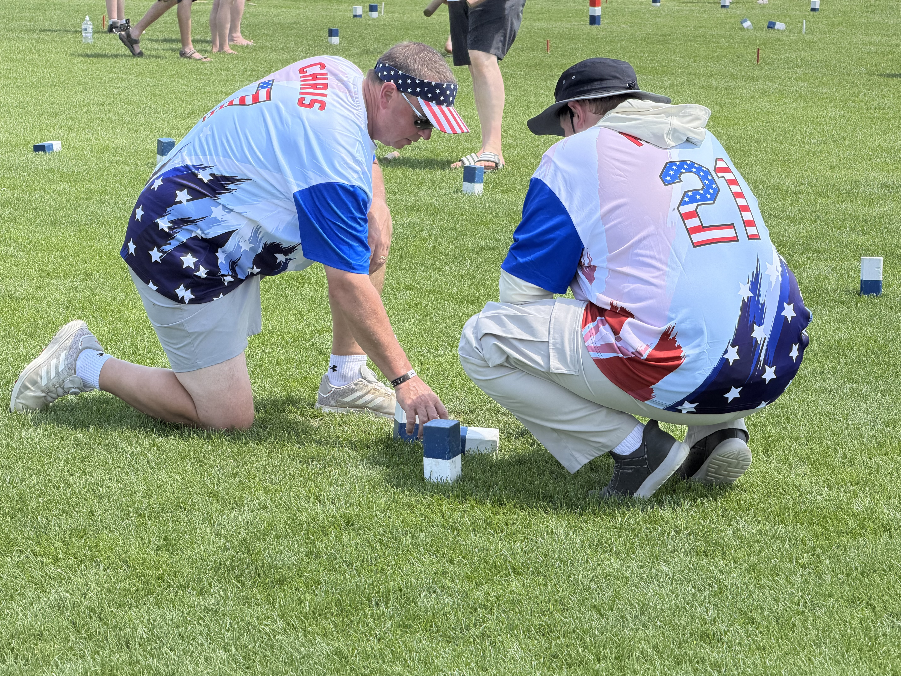
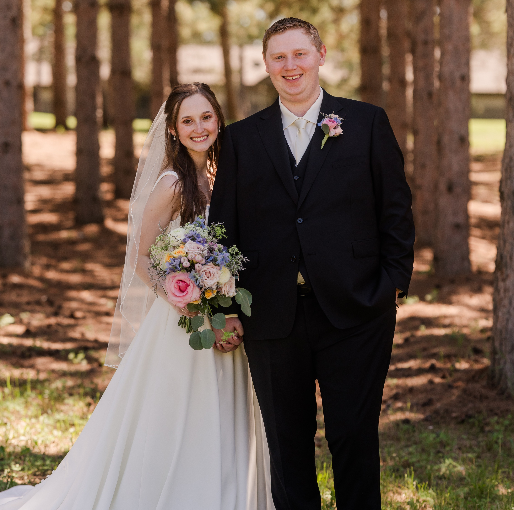

Hello! I'm Mikey Vall, working to build up my skills as a web developer. I am currently working as a Business Analyst at a software company where I help maintain and improve the company's internal software. I am also working on a few personal projects to improve my skills in web development and programming. I got recently married in June and was very excited to start this new chapter of my life. One of my favorite things to do is to play a yard game called Kubb where I actually got engaged at the national Kubb championship.


A personal website to showcase my skills, projects and a little about me.
A website for my wedding, providing information and details about the event.
Small individual projects that I have worked on independently to improve my skills.
A web application for tracking and analyzing Riot Games data. Technologies used: React, Node.js, Express, MongoDB.
A financial management tool for personal budgeting and expense tracking. Technologies used: React, Node.js, Express, PostgreSQL.
Here are some of the skills I have acquired through my work and personal projects: